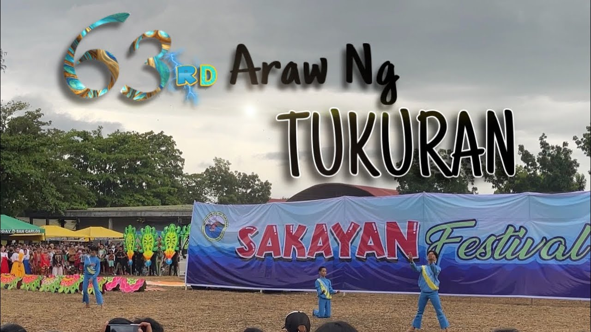
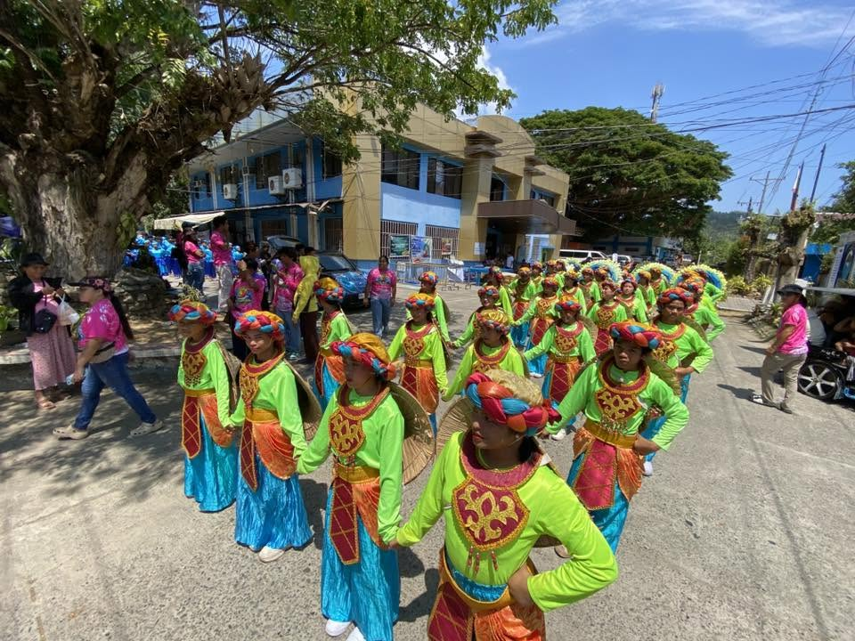
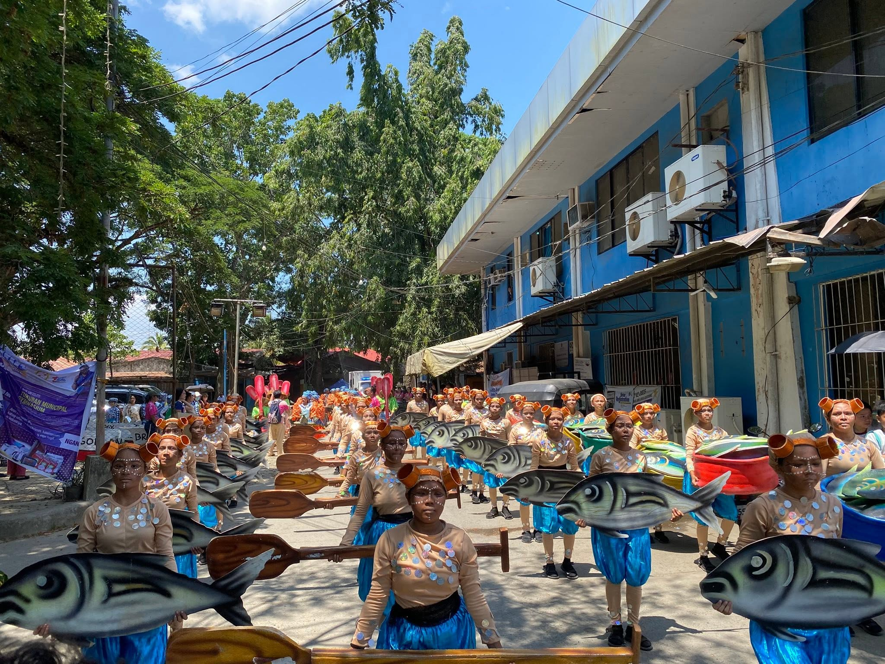
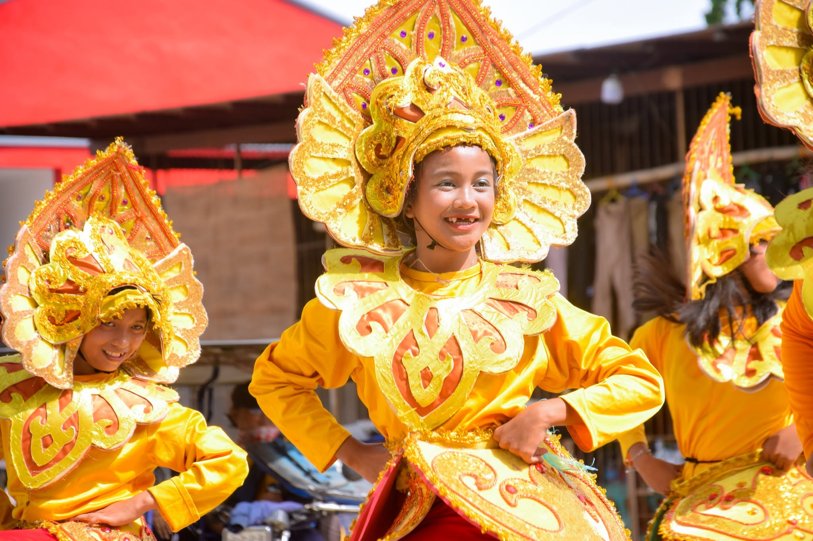

Sakayan Festival
Celebrating the Culture, Community, and Spirit of Tukuran
The Sakayan Festival of Tukuran
The Sakayan Festival is celebrated every April 1 as part of Araw ng Tukuran. The celebration features street dancing, a salo-salo of local food, and sea games including sakayan racing. High school campuses also compete in traditional dance performances, while the Festival Queen adds to the excitement and celebration of the event. Together, these activities bring the people of Tukuran together to celebrate their local traditions and festive spirit.
Feel the Festive Spirit of Tukuran
Join the fun and excitement as Tukuran celebrates the Sakayan Festival with music, dancing, food, and activities for everyone to enjoy. Experience the energy of the street dancing, cheer for the sakayan racers, and enjoy the colorful performances that fill the celebration.
Whether you come to watch, compete, taste local food, or simply celebrate with the community, Sakayan Festival is a time to enjoy the lively traditions and festive atmosphere of Tukuran.
What makes Sakayan special?
Community
A celebration that brings the community together through shared activities and festive moments.
Culture
Cultural expressions and local traditions form an important part of the festival experience.
Memories
Capture the colors, people, and moments that make the Sakayan Festival memorable.
Moments of Sakayan





More Activities
Discover Mutya ng Tukuran
Come and experience the celebration.
Discover the culture, community, and coastal character of Tukuran through its local destinations and celebrations.